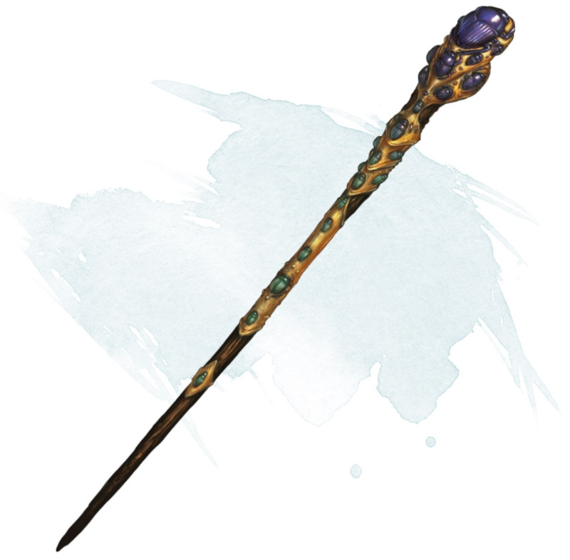

Staff of Swarming Insects
Staff, rare (requires attunement by a bard, cleric, druid, sorcerer, warlock, or wizard)
This staff has 10 charges and regains 1d6 + 4 expended charges daily at dawn. If you expend the last charge, roll a d20. On a 1, a swarm of insects consumes and destroys the staff, then disperses.
Spells. While holding the staff, you can use an action to expend some of its charges to cast one of the following spells from it, using your spell save DC: giant insect (4 charges) or insect plague (5 charges).
Insect Cloud. While holding the staff, you can use an action and expend 1 charge to cause a swarm of harmless flying insects to spread out in a 30-foot radius from you. The insects remain for 10 minutes, making the area heavily obscured for creatures other than you. The swarm moves with you, remaining centered on you. A wind of at least 10 miles per hour disperses the swarm and ends the effect.
Spells. While holding the staff, you can use an action to expend some of its charges to cast one of the following spells from it, using your spell save DC: giant insect (4 charges) or insect plague (5 charges).
Insect Cloud. While holding the staff, you can use an action and expend 1 charge to cause a swarm of harmless flying insects to spread out in a 30-foot radius from you. The insects remain for 10 minutes, making the area heavily obscured for creatures other than you. The swarm moves with you, remaining centered on you. A wind of at least 10 miles per hour disperses the swarm and ends the effect.
Dungeon Master´s Guide (SRD)
